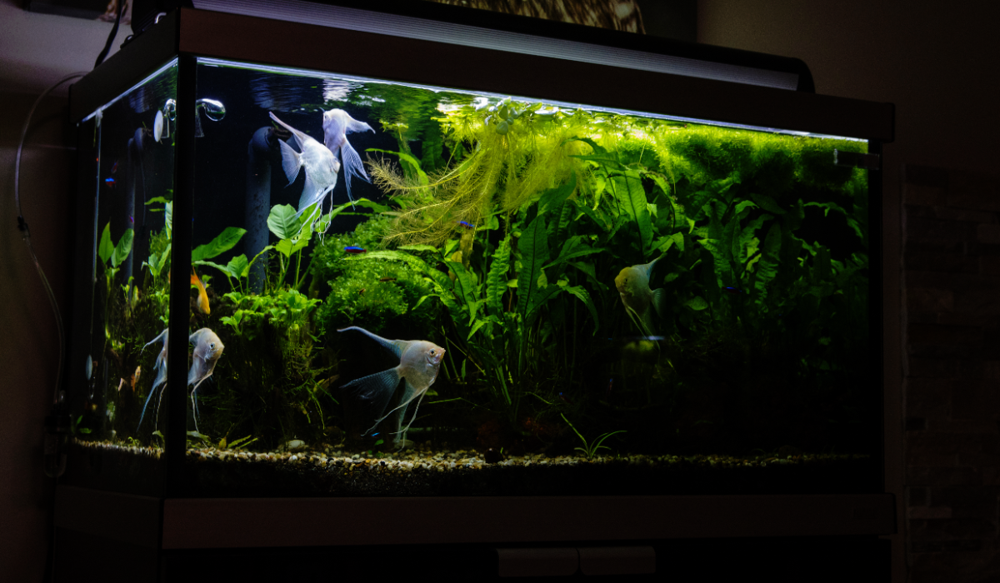
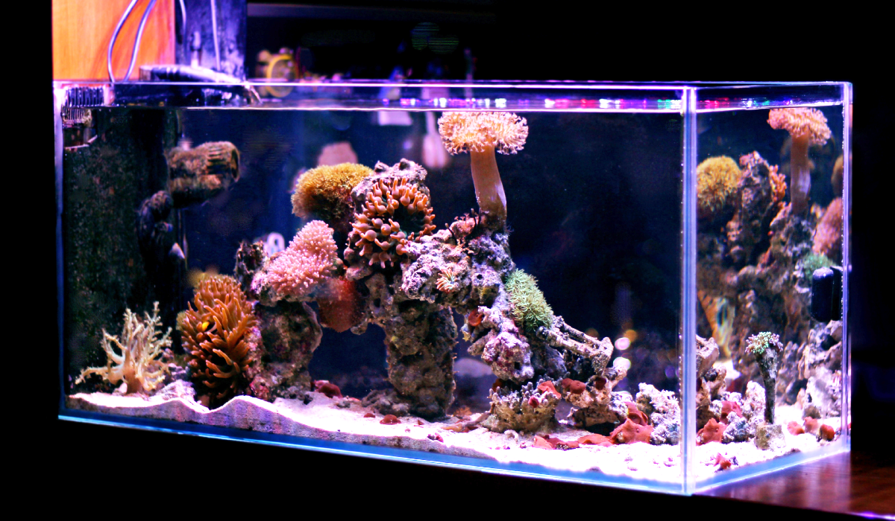
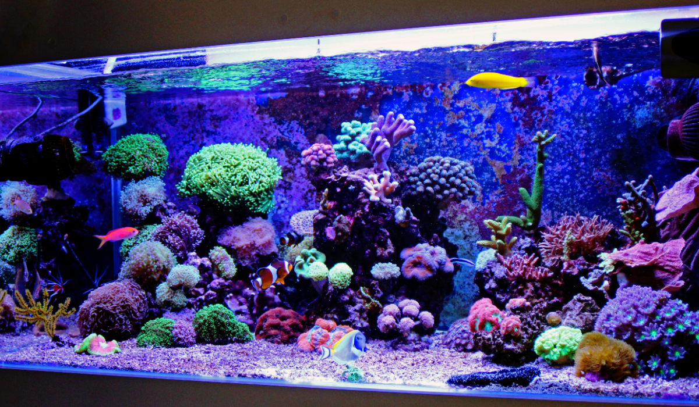
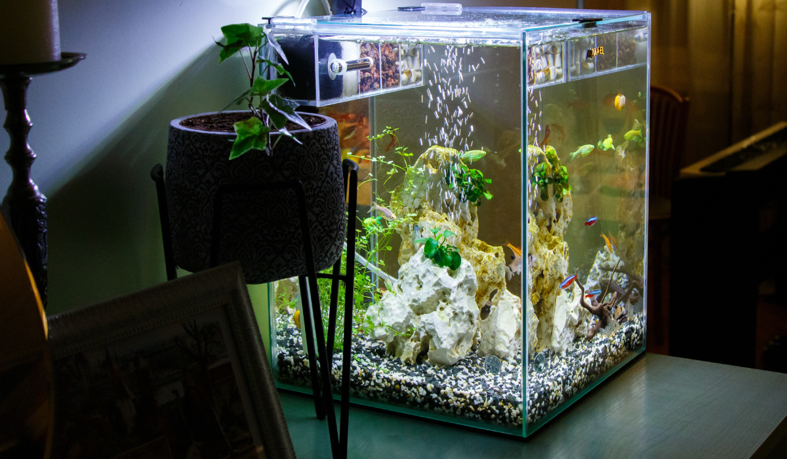

水槽の紹介
60cm水槽

一般的なサイズの水槽。値段も手頃で置きやすい。四角い水槽だけでなく手前角がコーナーになってるオシャレなデザインのもある。初心者にお勧め。
90cm水槽

やや大き目のサイズ。ややとは何ぞ？充分デカイわ！と思う方もいらっしゃるとは思いますが、アクアリウムやってる人はまぁまぁ大きいサイズの認識なんです・・・。重量もそれなりなので置き場所には注意が必要。特にガラス製はクッソ重たい。
そこそこ大きい魚が飼えるという点とレイアウトに拘る方には自由度が高いというメリットもある。お値段はそこそこします。
120cm水槽

かなり大きいサイズ。主に大型魚飼育に使われる。稀に小型魚を群れで泳がせたりする強者もいる。
このサイズになると、重すぎちゃって持ち上げるのもしんどいのでアクリル製にするのが一般的です。
尚このサイズから上のサイズ（120cm～180cm程度）になると床が抜ける場合があるので設置前には良く検討しよう。
お値段お高め。
小型水槽

一般的には45cm以下の水槽を指します。小さな生き物しか飼う事が出来ないのですが、小さい分置き場所にはあまり気を使わなくて良いというメリットがあります。フレームの無い全面ガラス仕様のインテリア水槽が人気。観賞だけでなくインテリアとして楽しむ事ができます。お値段は優しめなのですが、小さいと水温や水質が安定しないという隠れたデメリットもあります。実は玄人向け。